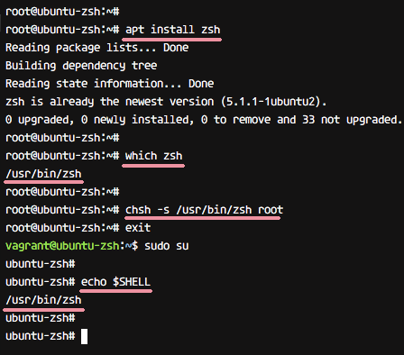

Oh-my-zsh
Oh-my-zsh es un marco de código abierto para administrar ZSH, el shell Z. Existe un marco para el shell Z, como prezto, Zgen, Antigen, etc. [HIMANSHU: No estoy seguro si necesitamos esta línea] . En este tutorial, usaremos 'oh-my-zsh' para nuestra configuración zsh.
Oh-my-zsh es un marco impulsado por la comunidad con muchas características. Viene con un tema personalizable y tiene un rico catálogo de complementos para administradores de sistemas y desarrolladores.
En este tutorial. Le mostraremos cómo instalar el shell Z o zsh en Linux Ubuntu y CentOS. Y luego configure el marco oh-my-zsh para administrar zsh. También le mostraremos cómo cambiar el tema zsh y habilitar algunos complementos.
Pasos para instalar y configurar ZSH
En Ubuntu:
apt install zsh
En CentOS:
yum install zsh
En Ubuntu:
which zsh
En CentOS:
chsh -s / bin / zsh root
Ahora cierre la sesión del usuario root, inicie sesión nuevamente y obtendrá el shell zsh.
Compruebe el shell actual utilizado con el comando a continuación.
echo $ SHELL
La salida debe ser zsh. Aquí está el resultado en Ubuntu.
